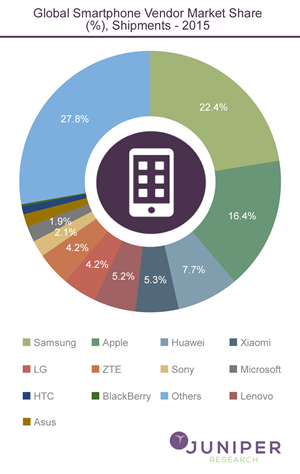
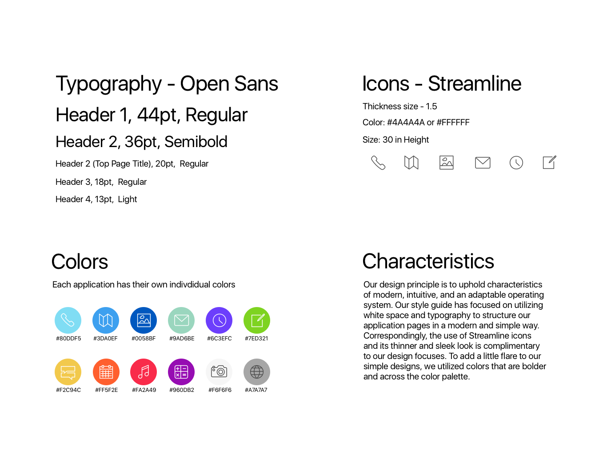
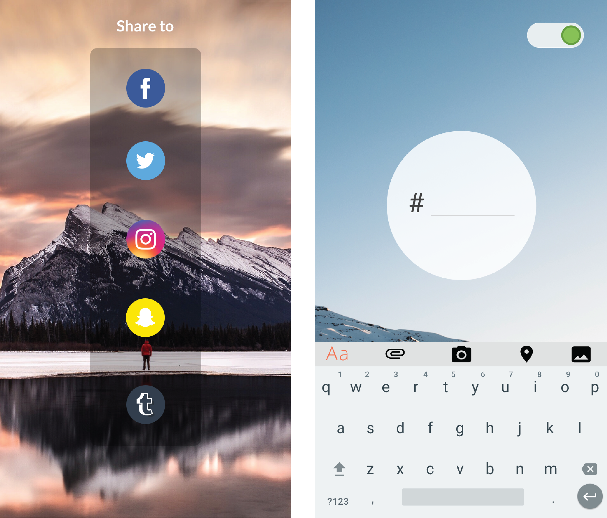
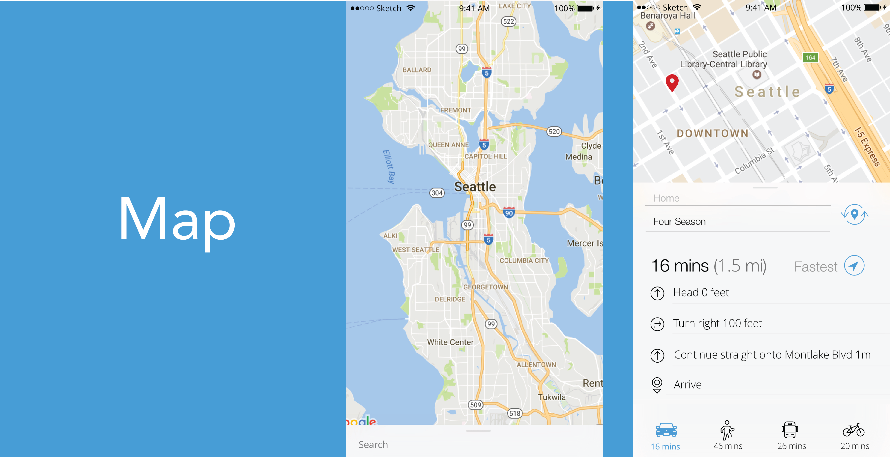
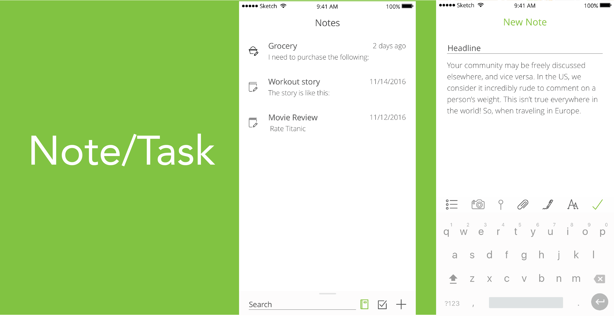

Overview
Mini OS is a mobile application operating system I involved with designing in my Mobile App Design course. Over the span of 10 weeks, my team developed 12 native applications which followed a design language we created. The class was structured in sprints, allowing for constant design reviews and iterations to shape our application. Documentation of this process is outlined in the steps below.
Role
In my team of 7, I became in charge of UI design, prototyping and testing 4 of 12 applications!
- DATE: Sep - Dec 2016
- CREATED WITH: Sketch, inVision
- ROLE: Research, Prototype, UI Design
Problem
Most operating systems are made by those of the an older generation who may not completely be in-tune with how the latest generation - specifically millennials - wish to use technology such as smart phones and its operating systems. We have also identified that many developers today are dominantly males at 91% with an average age of 35. We aimed to create an operating system that was designed by and for a more diverse population and the millennial generation. Millennials desire an operating system that is quick to achieve desired tasks without numerous steps and actions needed to achieve it. Millennials also desire a design that is simple and aesthetically-pleasing to look at. But while the design may be simple, millennials also desire functions that are quick to access and information that is gained by once glance of the screen. We attempted to solve these issues through our operating system: Mini OS for US.
Design Process
Research
Our team completed research on market trends, audience needs, and main competitors to fully understand the space we were designing for.
Market Trend
Every Operating System is designed with their own design language to guide its overall theme. Android, iOS, and Windows each offers a unique smartphone experience and caters to the needs of different potential users. Globally Samsung and Apple (running Android and iOS respectively) make-up about 50% of the global smartphone market share. This success can be traced back to their software design choices and the implementation of their design languages.
When designing an Operating System, it is important to take a look at other modern design trends. One design framework that can be seen across all of the top selling Operating Systems is Flat Design. Its simple and minimalistic design was influenced by Baushaus, a fine arts school in Germany that created their own design principles, as well as Swiss design. It evolved out of skeuomorphism, where new digital items would resemble their real-life counterparts. Due to its use of negative space, flat design is able to alleviate the concerns that come with having limited space.
Engaging users is a challenge that all Operating Systems have to overcome. Using bright colors, prominent notifications, and third-party applications are all ways to grab, and keep, the user’s attention. Without the plethora of games and social media platforms available on the App Store users wouldn’t spend nearly as much time on their phones. In a report by BI Intelligence, 28% of time spent on the Internet is social networking showing the importance social media is in modern mobile design. Social media platforms have done an incredible job of engaging users. They use likes, comments, and sharing to make users feel connected and invested in the lives of the other people in their network. From this pseudo-intimacy users are able to socialize without looking up from their phones. The designers behind these applications have crafted an experience that allows users to receive continuous entertainment and feedback.
Design Language
After research, we jumped into the design process by doing a competitor analysis of two poplar mobile OS, which are IOS and Andriod. We started with listing what we like and what we dislike about them. Then we finalized our design language before actually designing it in order to make sure everyone is one the same page while working on different apps.
Overall Design Themes

Style Guide
Before designing the actual Apps, I was in charge of finalizing our UI Design. This is the final version of mini OS's style guide. At first, I want to use two color palette that will change throughout the day to reflect the changing daylight in nature. However, after doing some user interviews, I found out that the current Night Shift feature is doing a great job adjusting the color that is good for people'e eyes and it seems unnecesseary to include two similar color palettes in our design. Then by looking at various applications, I found that using color to differetiate different functions will help people better perform tasks. I got this inspiration from my roommate, who categorized applications by colors. In terms of the font, I decided to use fonts from the same family and mainly use font weights and size to distinguish different sections of text.
Camera
This is the first App that I designed, the goal is to have users perform tasks through least steps. The final camera App is simple with few menu options. This allows you to view your beautiful photo in all its glory! If you click and hold on the photo button you can begin taking a video. Click once more to stop recording. I originally had ideas of sharing through camera App and adding tags after taking the picture, however, after team critique, I found that it is unnecessary and it is not a fluid user flow.

Album
Before I designed album App, I made a assumption that our OS System is smart enough to categorize users't photos depending on the contents. I decided to include a trip feature, that mini OS will generate albums for users when they take multiple photos in the same location that is different from their home city. I got this inspiration from google phone as well as my personal experience. I always found myself having trouble to find photos that I have taken when I was traveling. I also emphasized the importance of social medias by displaying all the social media apps that user downloaded in the mobile device. I started with making paper prototypes, then I made several iterations based on our style guide and unified UI kit.


Map
When designing map, I decided to place the search bar at the bottom because bottom area is one of the easiest area people tend to touch according to user research. Users are still able to pull up the bottom search bar and explore some new places around them, as well as simply input a destination to direct routes from current location. One of the highlight features that I added here is the virtual reality mode option. It allows user to see the road as it is in order to make directions easier for people who are not good at looking maps.

Note & Task
I decided to put notes and tasks together because it can minimize apps user app when they want to take notes when adding tasks. The combined note and task app allow users to create a list, tick off items, write a note and create a reminder all in one place.

Reflection
For me, this was my first time in charge of designing UI, applying UX principles, as well as designing hi-fidelity prototypes. I had to keep communicating my decisions to my teammates of varying backgrounds. Also, making our design look consisnt is the biggest challenge that I met during this process since we had a really big group. However, the final deliverable looks much consistent and insist our design languages. If I had more time, I think I will conduct usability testing for our OS. Because designing 12 apps from scratch in 10 weeks made us hard to have time conducting any usability testing.